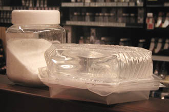
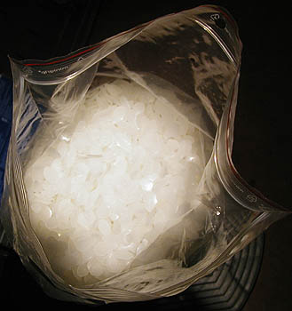

Toutes ces cires (sauf liquides, évidemment) doivent être fondues -
généralement au bain-marie - pour être moulées.
Densité approximative : 0,9. Ce chiffre permet de mesurer la quantité de cire correspondant à un moule que vous
aurez rempli d'eau pour en calculer le volume : compter environ 9/10èmes du poids
d'eau.
.Les cires minérales peuvent être mêlées à des cires végétales
ou animales afin d'en modifier :
* les propriétés plastiques
* le point de fusion. La cire
de carnauba, par exemple, peut notablement élever ce point de fusion. Note
: cela peut rendre nécessaire une cuisson à feu direct.
* la coloration, l'aspect.
La coloration d'une cire peut aussi être
artificielle. Il y a tout à gagner à la réaliser "dans la masse". La plupart des
pigments peuvent être utilisés tant que la température de fusion est modérée
(60-70°C environ).
Les bougies sont un cas particulier et nécessitent des précautions. Il est dangereux
d'utiliser du pigment pur : chauffé à quelques centaines de degrés à proximité
de la flamme, il pourrait provoquer des
émanations nocives ou d'autres réactions incontrôlables. Il existe des colorants
spécifiquement adaptés.
Précisons de toute manière qu'une cire "liante", comme la
cire d'abeilles ou la cire de
carnauba, protègera beaucoup mieux le pigment qu'une cire trop chargée en
paraffine.
Avec une cire plus saturée telle qu'une cire minérale habituelle, le risque est que l'oeuvre
se comporte elle-même comme... un gros
pastel gras de mauvaise qualité ! Il faut trouver la bonne proportion. Faire
quelques tests est facile.
Enfin, au chapitre de la couleur toujours, précisons que les affirmations de certains
auteurs, selon lesquels "la cire peut être recouverte de peinture à
l'huile" sont plus que hasardeuses. Comme l'indique Kevin
Mac Cloud, une seule substance adhère à coup sûr à une cire : la même cire
et éventuellement certaines autres cires. Nous ajouterons que cela n'est même pas garanti sans un réchauffement
permettant une fusion, une soudure, comme dans le cas de la paraffine par exemple.
Il n'est quand même pas exclu a priori qu'une cire saponifiée ou une
encaustique adhèrent un peu à une cire modérément chargée de paraffine. A vrai dire, plus
la cire du "support" est liante (cire d'abeille, de carnauba, mixage
avec de l'huile de lin), plus la couche picturale a des chances d'accrocher -
théoriquement. A
l'inverse, plus une cire est chargée de paraffine (cire saturée), plus elle est un support
misérable, y compris pour elle-même.
Dans tous les cas, il faut impérativement réaliser des tests. Lors de ces
tests, des variations provoquées de la température et des immersions
prolongées dans l'eau tiède permettent de détecter d'éventuels points
faibles.
Les
cires et la sculpture
Sur Dotapea.com, nous essayons d'éviter autant que possible la segmentation du savoir (voir Thèmes). Toutes
les techniques peuvent contribuer à la réalisation d'oeuvres artistiques de
qualité.
Cependant, il faut faire quelques distinctions.
Les cires peuvent être destinées à des emplois extrêmement différents :
* le coulage de métaux tels que le bronze (cire
perdue) dans le but de créer une statue.
L'original est entouré d'un
matériau tel que la terre, qui jouera le rôle de moule. Il est percé de
deux orifices. L'un sert à l'évacuation de la cire fondue, l'autre à
l'introduction du métal en fusion. Cette technique est d'une grande
complexité (voir notamment ci-dessous, Ajout de
la cire autour d'un noyau).
* le moulage d'une statue de cire suivi du coulage d'une autre
matière (plâtre, barbotine, résine, etc.)
* le coulage de matériaux à basse température dans des moules en
cire.
* la fabrication d'objets en cire tels que des bougies, bien sûr,
mais aussi certaines oeuvres d'art éphémères.
Un exemple
d'utilisation des cires minérales : la cire de bougie
Composition typique :
* 80 à 90% de paraffine
(voir image
plus bas), sous n'importe quelle forme (morceaux d'un centimètre, paillettes,
cristaux), ou d'une imitation gélatineuse (à droite sur la
photo ci-dessous) destinée aux bougies semi-liquides transparentes.
* 10 à 20% de stéarine (poudre à gauche sur la photo ci-dessous) ou d'un mélange de stéarine
et, dans le cas des imitations gélatineuses, de "cire minérale" (voir
ci-dessous) en grains à
parts égales.
Le produit qui a pour nom commercial (très imprécis, voire
abusif) "cire minérale" chez certains fabricants
- en fait, il s'agit d'une variété de paraffine traitée - joue le rôle
d'opacifiant qui diminue les coulées. Sont rôle est important lors de
l'utilisation de gels.
Pour réaliser des bougies ou s'initier au moulage
(voir ci-dessous), il est parfaitement possible d'utiliser comme matière
première des bougies blanches toutes simples achetées en lots de dix dans un
supermarché ou une droguerie. Il suffit de faire fondre les bougies dans une
casserole (feu bien doux ou bain-marie) et de "pêcher" les mèches dans la cire en
fusion à l'aide d'une fourchette. De cette manière, vous disposez d'emblée du
matériel nécessaire et rien ne vous empêche d'ajouter des colorants, des
opacifiants, etc.
On
peut très bien s'initier aux problématiques du moulage (voir Dépouille
et contre-dépouille in Le Moulage) en travaillant avec :
* un peu de plâtre qui servira à prendre
l'empreinte d'objets de formes diverses (voir
Le plâtre, mode d'emploi). Utilisez de préférence pour commencer des
modèles ayant une forme évasée (cela facilite le démoulage). Par la suite,
moulez des objets plus complexes et travaillez en plusieurs pièces, par
portions successives que vous laisserez sécher à chaque fois. Vous pouvez
maintenir les pièces à l'aide d'élastiques ou de
chapes.
N'oubliez pas d'enduire le modèle et le dessus des pièces déjà moulées
avec un peu de vaseline (par exemple) pour
faciliter le démoulage. N'employez pas d'originaux coûteux ou fragiles !
N'essayez surtout pas de mouler le vivant directement avec du plâtre.
Cette opération-là est beaucoup plus difficile et dangereuse qu'il n'y
paraît de prime abord.
Note : si vous rencontrez trop de difficultés avec le plâtre, essayez
peut-être l'argile.
* de la cire de bougie
préalablement fondue que vous coulez dans le moule enduit d'un peu de
vaseline ou d'eau. A ce moment, n'oubliez pas la mèche si c'est une bougie
que vous souhaitez réaliser ! Il existe un moyen très simple de se fournir
en mèches et en cire de bougie : voir ci-dessus.
* une fois la cire sèche, vous pourrez vous initier aux joies du
démoulage final ! Heureusement, les cires minérales sont peu coûteuses et
peuvent être réutilisées à volonté.
Avec ce matériel et ce
type de procédés simples, vous pouvez explorer à peu de frais un bon nombre
d'aspects du moulage (il est conseillé de lire
l'article concerné --> cliquer ici). De plus, si vous avez acquis un
certain "coup de main", vous pouvez parfaitement aller voir un fondeur, muni(e) de votre épreuve de cire
(pourvue de noyaux si possible) et lui demander de réaliser, à partir de
celle-ci, un
bronze à cire perdue...
Dernières précisions :
attention aux brûlures que peut occasionner la cire fondue. Elles sont rarement
graves, mais doivent nous inciter à travailler dans une atmosphère calme. Le
risque d'ignition causée directement par la cire fondue est pratiquement nul.
Par contre, si vous souhaitez inclure des objets (ininflammables) dans la cire et que votre but
est de réaliser une bougie, pensez que ces objets, eux, peuvent tomber lors de
la fonte et communiquer leur chaleur à votre table, votre beau tapis persan ou
encore à la boîte d'allumettes restée ouverte, là, juste à côté de la
bougie...

Les produits gélatineux (voir photo
ci-contre) sont susceptibles de flotter sur des liquides. Ils peuvent être
colorés à l'aide de produits dédiés à cet emploi.
Cire microcristalline et cire à modeler
Une cire "minérale" importante est la cire microcristalline. "Disponible
dans toutes les drogueries" affirment certains, "dans les magasins
spécialisés" dirons-nous plus prudemment, elle est employée dans la
fabrication de cires à modeler. Elle a sensiblement les mêmes propriétés
plastiques que la cire d'abeilles et l'a supplantée dans les ateliers grâce
à son prix, nettement inférieur.
Une cire à
modeler est typiquement composée de trois parts sensiblement égales en
poids...
* de paraffine
* de
cire microcristalline
*
de
colophane (petite photo ci-contre) à
diluer préalablement dans l'alcool à la manière
d'une résine dammar.
Attention :
n'introduire la colophane diluée que lorsque les cires ont déjà fondu. Vous
diminuerez ainsi très sensiblement les risques d'accidents inhérents au
réchauffement de l'alcool - que vous devez éliminer totalement par une
cuisson longue à feu doux, en remuant.
Cette préparation doit impérativement être réalisée
au bain-marie sur une plaque électrique.
Éviter toute source de flamme à proximité. Aérer le local, le fermer en cas
d'ignition.
Plus anciennement, de l'huile d'olive, du suif, du
saindoux, de la térébenthine de Venise, de la poix et bien entendu de la
cire d'abeilles étaient employés. Il s'agissait de précieuses recettes
d'ateliers.
Cires
à tailler, assemblages
La cire la plus
conseillée pour la taille est certainement la paraffine pure (voir
photo ci-dessous).
Généralement, elle est coulée à l'état liquide
dans un "moule" élémentaire parallélépipédique ou cylindrique
traité à l'huile (vaseline), à l'eau (plâtre mouillé), pouvant être métallique, en
caoutchouc silicosé, en bois ou fait de matériaux divers enduits de savon, etc. Une
armature peut être incluse au sein du moule.
Les outils à employer sont
banals. N'importe quelle lame, de préférence légèrement chauffée, fait
l'affaire.
Les cassures peuvent être ressoudées par réchauffement (certains
utilisent le fer à souder). De la même manière, des pièces modelées peuvent
être ajoutées, collées à l'ensemble.
Des structures assez importantes
peuvent être assemblées de la même façon avant ou pendant le travail.
Il est également possible de
partir d'une masse à laquelle on a donné la forme, par moulage
et coulage, d'une statue ou d'un objet existant.
Coulage
de cire dans un moule
Le coulage ne pose aucun
problème précis si ce n'est celui de la préparation, qui doit être adaptée au matériau constitutif du
moule. Par exemple, un moule en plâtre peut être préparé simplement par une
bonne imbibition
d'eau, d'eau savonneuse ou de vaseline.
Inclusion
d'un autre matériau dans la masse, lors du coulage ou par ajout de la cire
autour d'un "noyau"
Quelle que soit la destination du
travail, c'est une pratique qui a été
assez courante, notamment lorsque la paraffine n'était pas encore disponible.
Il fallait alors utiliser une cire naturelle coûteuse. Lui substituer
partiellement d'autres matières permettait de réaliser une économie
très substantielle.
De plus, dans le cas du procédé "à cire perdue"
destiné au coulage d'un bronze, l'économie porte aussi sur le très coûteux métal. Par
ailleurs, l'inclusion d'un noyau
permet de diminuer très considérablement le poids de l'oeuvre.
Par
conséquent, le recours au "noyau" est encore tout à fait
d'actualité dans les fonderies.
Différentes techniques existent en
fonction du procédé de sculpture :
* cire perdue. Un noyau réfractaire
est sculpté en respectant assez grossièrement les formes de la future statue.
La cire est appliquée sur ce noyau. Lors de la fonte, celui-ci est maintenu de
sorte à ne pas tomber au fond du moule.
* cas divers. Comme ci-dessus, on prépare
un noyau de forme assez proche de celle de l'oeuvre à réaliser, cette fois-ci
avec une argile banale. On trempe la terre dans la cire fondue que l'on laisse "prendre"
partiellement autour de la masse. On retire l'ensemble "terre plus cire". A
froid, celui-ci est découpé, la terre est éliminée et la cire assemblée de
nouveau. Elle peut être sculptée à l'extérieur. Un noyau peut encore être
réalisé après sculpture suivant différentes méthodes.
*
cas spécifique de la cire conservée telle quelle en tant qu'ouvre d'art -
plutôt éphémère. C'est aussi le cas de la bougie moulée, notamment. Toutes
les méthodes et bricolages permettant la formation d'un ou de plusieurs
noyaux sont valables.

Conservation des surplus
Verser la cire sur du
papier paraffiné.
Celui-ci n'adhèrera
pas.
Cas et usages particuliers
Il
existe des "cires à modeler" prêtes à l'emploi. Elles sont vendues
assez cher par très petites
quantités dans les magasins de fournitures pour les arts plastiques. Nous
ignorons leur composition. Comme substitut à ce produit, nous ne saurions trop
conseiller la cire microcristalline préparée
conjointement à d'autres produits, comme mentionné
ci-dessus.
La
cire d'abeilles peut être utilisée, mais au-delà de
10%, elle suppose l'emploi d'enduits au moment du moulage pour faciliter le
démoulage car ce produit est collant (graisse insaturée). Il fond plus rapidement que la
paraffine
(graisse saturée) et coûte plus cher mais sent très bon.
Les cires de bougies peuvent être
parfumées à l'aide de produits spécifiques.
Un autre usage de la cire minérale est évoqué dans l'article Les
réserves à la cire.
Retour
début de page